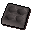
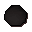
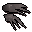
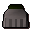

Steel bar
| Config name | steel_bar |
| Item id | 2353 |
| Value | 100 gp |
| Weight | 4lb |
| Members | No |
| Tradeable | Yes |
| Stackable | No |
| Defined in | scripts/skill_smithing/configs/smelting/smelting.obj |
Steel bar
It's a bar of steel.
How to make
| Skill | Level | XP | Ingredients | Tool | How | Where | Makes |
|---|---|---|---|---|---|---|---|
| Smithing | 30 | 17.5 | interface | furnace | 1 smelting |
Used to make
| Skill | Level | XP | Ingredients | Tool | How | Where | Makes |
|---|---|---|---|---|---|---|---|
| Smithing | 30 | 37.5 | interface | anvil | |||
| Smithing | 31 | 37.5 | interface | anvil | |||
| Smithing | 32 | 37.5 | interface | anvil | |||
| Smithing | 33 | 37.5 | interface | anvil | |||
| Smithing | 34 | 37.5 | interface | anvil | |||
| Smithing | 34 | 37.5 | interface | anvil | |||
| Smithing | 34 | 37.5 | interface | anvil | |||
| Smithing | 35 | 37.5 |  Ammo mould | use on object | furnace |  Cannonball ×4members | |
| Smithing | 35 | 37.5 | interface | anvil | |||
| Smithing | 35 | 75.0 | interface | anvil | |||
| Smithing | 36 | 75.0 | interface | anvil | |||
| Smithing | 36 | 37.5 | interface | anvil | |||
| Smithing | 37 | 75.0 | interface | anvil | |||
| Smithing | 37 | 37.5 | interface | anvil | |||
| Smithing | 38 | 75.0 | interface | anvil | |||
| Smithing | 39 | 112.5 | interface | anvil | |||
| Smithing | 40 | 112.5 | interface | anvil | |||
| Smithing | 41 | 112.5 | interface | anvil | |||
| Smithing | 42 | 112.5 | interface | anvil | |||
| Smithing | 43 | 75.0 | interface | anvil |  Steel claws | ||
| Smithing | 44 | 112.5 | interface | anvil | |||
| Smithing | 46 | 112.5 | interface | anvil | |||
| Smithing | 46 | 112.5 | interface | anvil |  Steel plateskirt | ||
| Smithing | 48 | 187.5 | interface | anvil |
Dropped by
| NPC | Level | Quantity | Rarity | Via | Notes |
|---|---|---|---|---|---|
| 14 | 1-3 | 1/16 (6.25%) | |||
| 29 | 1-3 | 1/16 (6.25%) | |||
| 49 | 1-3 | 1/16 (6.25%) | |||
| 79 | 1-3 | 1/16 (6.25%) | |||
| 120 | 1-3 | 1/16 (6.25%) | |||
| 159 | 1-3 | 1/16 (6.25%) | |||
| 42 | 1 | 3/64 (4.69%) | |||
| 33 | 1 | 3/64 (4.69%) | |||
| 33 | 1 | 3/64 (4.69%) | |||
| 24 | 2 | 5/256 (1.95%) | |||
| 24 | 2 | 5/256 (1.95%) | |||
| 24 | 2 | 5/256 (1.95%) | |||
| 24 | 2 | 5/256 (1.95%) | |||
| 24 | 2 | 5/256 (1.95%) | |||
| 24 | 2 | 5/256 (1.95%) | |||
| 86 | 1 | 1/64 (1.56%) | |||
| 62 | 1 | 1/128 (0.78%) | |||
| 62 | 1 | 1/128 (0.78%) | |||
| 62 | 1 | 1/128 (0.78%) | |||
| 62 | 1 | 1/128 (0.78%) |
Referenced in scripts
scripts/_test/scripts/cheats/cheat_bank.rs2scripts/areas/area_canifis/scripts/canafis_citizen.rs2scripts/drop tables/scripts/black_knight.rs2scripts/drop tables/scripts/death_ig_solider_wander.rs2scripts/drop tables/scripts/fire_giant.rs2scripts/drop tables/scripts/moss_giant.rs2scripts/drop tables/scripts/paladin.rs2scripts/macro events/scripts/thieving/macro_event_watchman.rs2scripts/skill_magic/scripts/spells/superheat.rs2scripts/skill_smithing/scripts/smelting/cannonballs.rs2scripts/skill_smithing/scripts/smelting/smelting.rs2scripts/skill_smithing/scripts/smithing/smithing.rs2